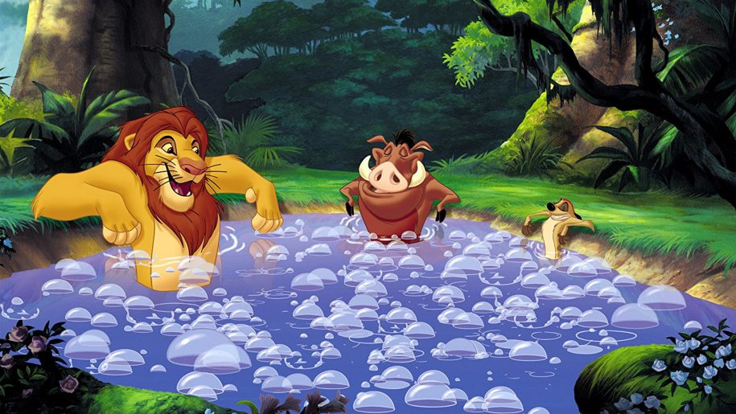

About Simba
Simba is a young lion cub, a heir to the Pride Lands, and the only child of Mufasa. He must grow and learn to know what it takes to be King and return home to save his homeland.
Simba and his friends
Simba's Characteristics
- He is heir to the Pride Lands
- He wants to be a great King, like his father Mufasa
- In his youth he was brash and naive
Simba's adopted parents/friends
Simba has some great times with his adopted fathers Timon and Pumba, but like him they are running from their pasts as well. Click on the links below to learn more about them: